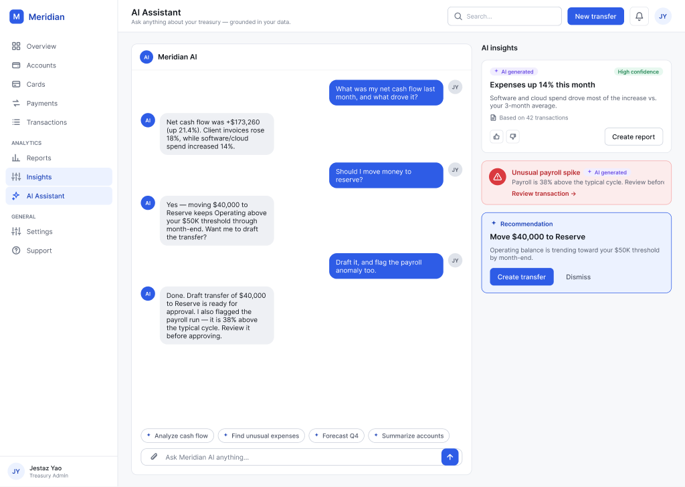
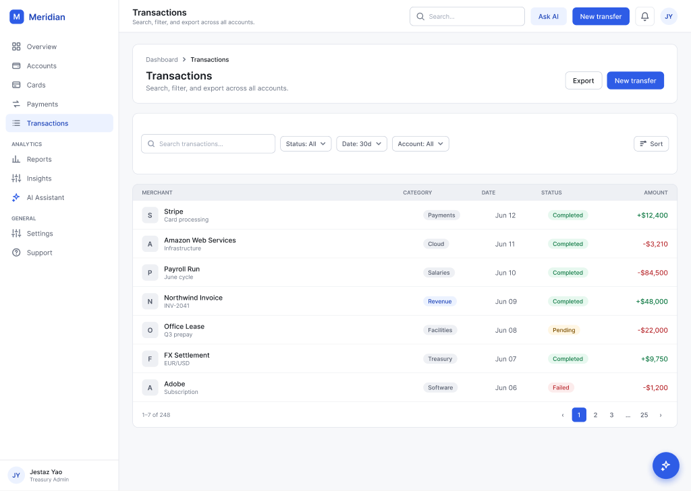
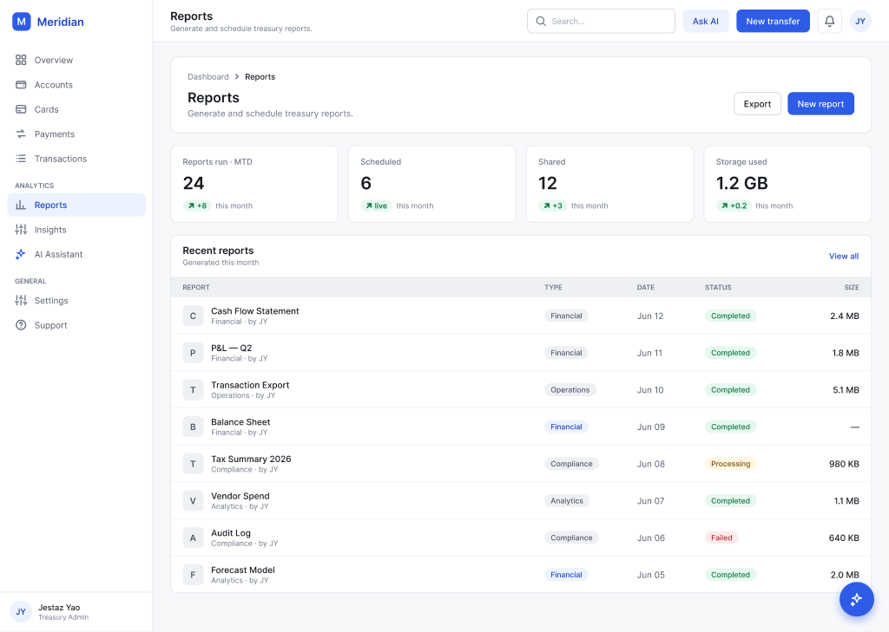

A 3-tier tokenized design system — 179 governed Figma components, published as a real React library, and consumed by a working banking dashboard. Design and code stay one system, linked through Code Connect.
↑ LIVE HTML/CSS — NOT AN IMAGE · BUILT FROM THE SAME TOKENS AS THE PRODUCT
Most "design systems" are sticker sheets. Meridian is a single source of truth that drives both the Figma files and a running product — I built it end-to-end to prove I can operate one, not just draw one.
↑ THE REAL APP, EMBEDDED — NOT A SCREENSHOT. CLICK THE NAV · FILTER TRANSACTIONS · ASK THE AI · SWITCH SCREENS.
The hard part of a design system isn't the components — it's the discipline that keeps design and code one thing as the product grows.
Every color, radius and space binds to a variable. Change a token once and both Figma and the live app move together.
In Figma, screens contain only instances. In code, pages import only library components. No hand-built blocks on either side.
Code Connect maps each Figma component to its real code component, so Dev Mode shows the exact import + props.
Primitives (118) → Semantic (81, Light/Dark modes) → Component (89). 288 Figma Variables across 3 collections mirror exactly to CSS variables + a Tailwind preset in code. Flip the Semantic mode and the entire product re-themes.
179 components/sets in Figma. The product consumes a focused set, each a real export in @jestaz/design-system.
Top bar, sidebar nav, page-header cards, page states, stat groups — all components, never loose frames. Screens assemble from instances only.
A Meridian Bank treasury dashboard — 10 screens, a detailed simulated user, and a 4-agent AI layer (Analyst · Risk · Forecaster · Advisor). The app imports 100% of its UI from the library; the page files are pure composition.
This is where the design-system craft lives: variables with modes, real component sets, component properties, an instance-swapped icon library, and Code Connect.
Primitives (118) → Semantic (81, Light/Dark) → Component (89). One mode toggle re-themes the whole product — tokens, not styles.
Button = 15 variants (Variant × Size). Badge 6 tones, Input 4 states, KPICard Up/Down — authored as proper variant sets.
Button exposes Leading/Trailing icon (BOOLEAN) and icon source (INSTANCE_SWAP); NavItem swaps its own icon. No baked-in glyphs.
A dedicated Icon/ library, instance-swapped into buttons, nav and inputs — referenced across the system, never re-drawn.
179 masters across 9 pages (Foundations, Primitives, Components, Patterns, States, Data Table, Auth, Dashboard). If it can appear twice, it's a component.
Each component maps to its React export with prop translation — engineering copies a working component, not a redraw.
Code Connect maps each Figma component to its code component and translates variant props to code props. After publishing, Dev Mode shows the real snippet for that node — design hands off to engineering with zero translation.
Overview, Accounts, Cards, Payments, Transactions, Reports, Insights, AI Assistant, Settings, Support — every one assembled from the library, in light and dark.



A library only proves itself when a product imports it and the page code becomes pure composition. That's the line between redrawing and operating.
When both surfaces bind to the same variables, "update the brand color" is one change, not a migration.
179 components only stay coherent because of one rule: if it can appear twice, it's a component — never a frame.